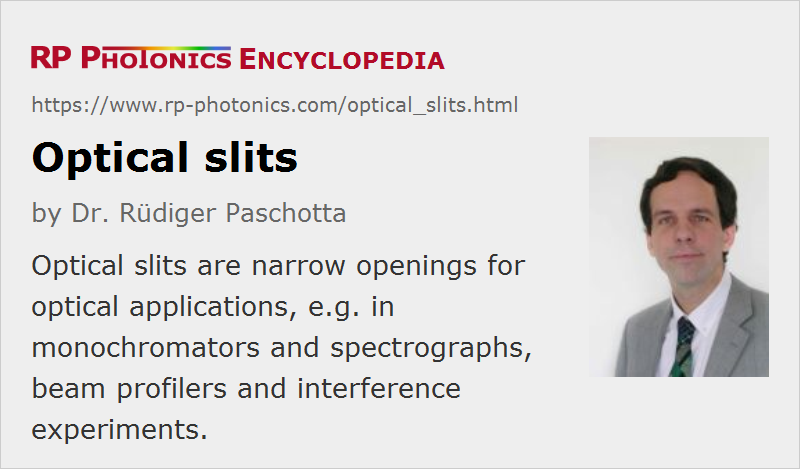

Optical Slits
Definition: narrow openings through which light can be transmitted
German: Schlitzblenden
How to cite the article; suggest additional literature
Author: Dr. Rüdiger Paschotta
Optical slits are narrow openings through which light can be transmitted. They are usually made with high precision, often with laser material processing in some resistant metal such stainless steel, molybdenum or tungsten. In some cases, such a slit is made in a thin metallic coating on a glass piece.
Typical slit widths are some tens or a few hundreds of micrometers, but slits with a width of only a few micrometers are also available. The width tolerance can be of the order of 1 μm. The length may be a few millimeters or more.
There are also adjustable mechanical slits, where the slit width can be tuned with a micrometer screw.
Applications of Optical Slits
Optical slits are used in various optical instruments:
- At the entrance and exit of a monochromator, e.g. of Czerny–Turner type, or an optical spectrograph, there is usually a narrow slit. It prevents the propagation of light on paths which would be possible for light outside the wanted range of transmission wavelengths.
- Some beam profilers work with a rotating disc with one or more optical slits, where one measures the transmitted optical power as a function of the slit position. Two such discs can be used for obtaining two-dimensional beam profiles.
- Thin optical slits have been used in interference experiments, for example in the famous double-slit experiment of Thomas Young.
Suppliers
The RP Photonics Buyer's Guide contains 5 suppliers for slits.
Questions and Comments from Users
Here you can submit questions and comments. As far as they get accepted by the author, they will appear above this paragraph together with the author’s answer. The author will decide on acceptance based on certain criteria. Essentially, the issue must be of sufficiently broad interest.
Please do not enter personal data here; we would otherwise delete it soon. (See also our privacy declaration.) If you wish to receive personal feedback or consultancy from the author, please contact him e.g. via e-mail.
By submitting the information, you give your consent to the potential publication of your inputs on our website according to our rules. (If you later retract your consent, we will delete those inputs.) As your inputs are first reviewed by the author, they may be published with some delay.
See also: optical apertures, pinholes
and other articles in the category general optics
|  |
If you like this page, please share the link with your friends and colleagues, e.g. via social media:
These sharing buttons are implemented in a privacy-friendly way!